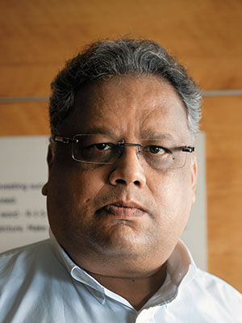
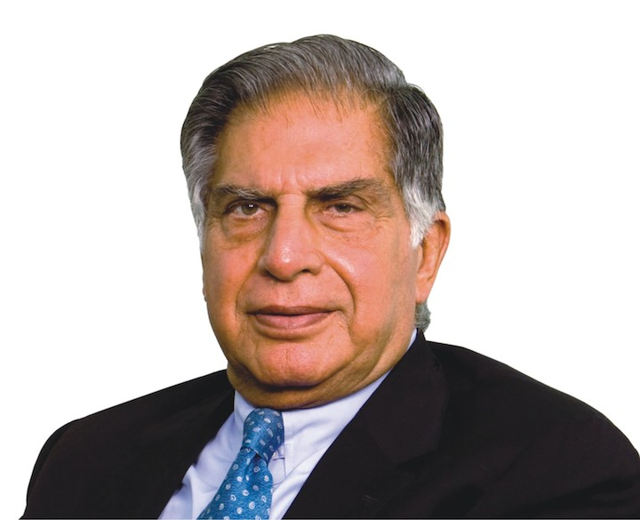
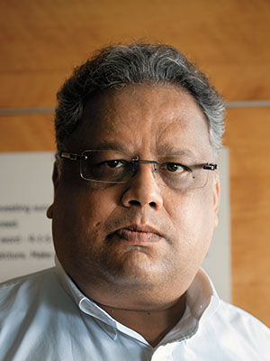
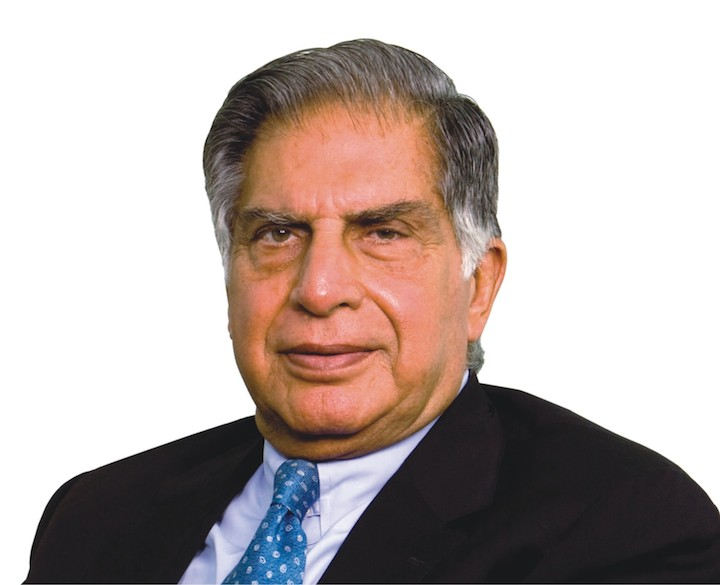

Elon Reeve Musk FRS is a business magnate, industrial designer, and engineer. He is the founder, CEO, CTO, a nd chief designer of ,SpaceX early stage investor,CEO , and product architect of Tesla, Inc.; founder of The Boring Company; co-founder of Neuralink; and co-founder and initial co-chairman of OpenAI. A centibillion aire, Musk is one of the richest people in the world.
Warren Edward Buffett is an American investor, business tycoon, philanthropist, and the chairman and CEO of Berkshire Hathaway. He is considered one of the most successful investors in the world and has a net worth of over $100.6 billion as of April 2021, making him the w orld's seventh-wealthiest person. Buffett was born in Omaha, Nebraska.
Rakesh Jhunjhunwala (born 5 July 1960) is an Indian business magnate. He manages his own portfolio as a partner in his asset management firm, Rare Enterprises. He has a net worth of $4.3 billion (as of May 2021). During his early life, Rakesh grew up in a Marwadi Family in Bombay, where his father, worked as Commissioner of Income Tax, Bombay.